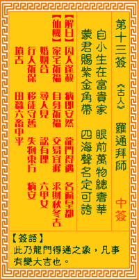

观音灵签第十三签 【罗通拜帅】 |
 | |||
自小生身富贵家 眼前万事总奢华 蒙君赐受金鱼袋 四海传名足可夸 |
||||
| 【吉凶】 | 上上签 | 【宫位】 | 寅宫 | |
| 【签语】 | 此卦龙门得遇之象，凡事有变大吉也。 | |||
| 【解曰】 | 囚人逢赦 病即安然 龙门得遇 名遍皇都 | |||
| 【仙机】 | 此签家宅祈福，自身祈福，求财秋冬吉，交易宜迟，婚姻合，寻人见，讼有理，六甲女，行人祈保，田蚕中平，六畜中平，移徙守旧，失 物东方，病安，山坟吉。 | |||
| 【详解】 | 从小生长在富有的家庭，身边的一切所见必然极尽奢华;受邀接受国家的封赐也不居功，这样的谦让真足以名扬四海众人皆夸。 囚徒得赦，病遇良医，龙门得过，名显皇都之象。凡事变化则吉。 君尔也。自小生身富贵之家。于是君汝之生活也。总是奢华之世界者。谋望皆成。惟有贵人之扶持者。必能称意。且不劳而成者。易言之。囚徙得赦。病遇良医。龙门得过。名显皇都之象。凡事变化则吉也。 此签有”谦让未遑”之意。提醒当事人，施恩不求报。当有人向我们求助时，凡所当为，义不容辞。如果抱着希望对方回报的预期心理，就失去了原本为善的美意。须知”有心的功德不是真功德”。助人的根本意义，在于无心且单纯地去做，解决了问题之后，心里的快乐，绝非外在的有形物质可比拟。切勿期待对方有所表示、或因此窃喜念念不忘。相反地，如果自己受到帮助，即使是小小的恩惠，也要谨记在心、不可或忘，有机会立即加以报答。谨记施比受更有福，为善不足挂齿。 | |||
| 【典故】 | 罗通是唐初时英雄好汉，父亲叫罗成，英勇善战，十七岁时，在演武场上比武夺得帅印，领兵征伐北方的敌人，立下汗马功劳。后因迫死 屠炉公主而触怒唐太宗皇帝，被削除官职，不能娶妻。后程咬金求情，得皇帝宽赦。《罗通北扫》故事 | |||